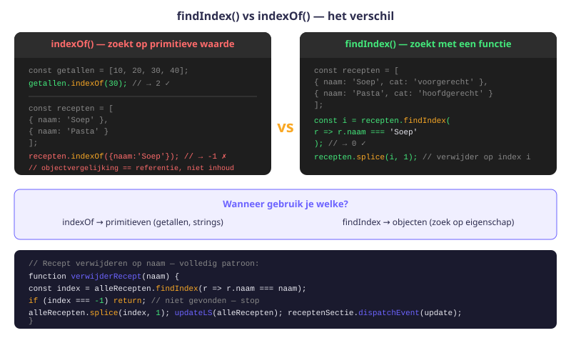
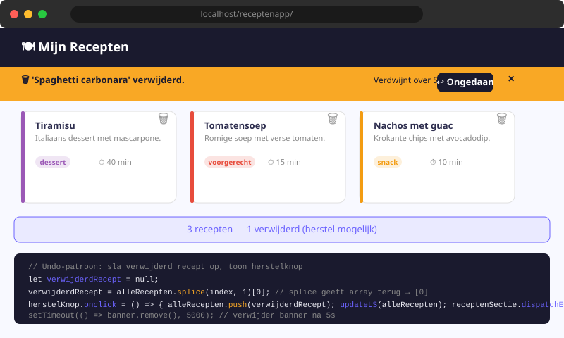

Receptenapp — Verwijderen & Uitdieping
- De verwijderfunctie volledig begrijpen en uitbreiden
findIndex()ensplice()toepassen in complexere situaties- Een bevestigingsvenster (
confirm()) correct integreren - De relatie tussen array-mutatie, localStorage en DOM-update beheersen
- Een "verwijder alle recepten van categorie X"-knop bouwen
- Een undo-functie implementeren met
setTimeout()
15.1 Terugblik: verwijderRecept() uit H12
In H12 bouwden we de basisverwijderfunctie:
function verwijderRecept(verwijderNaam) {
const index = alleRecepten.findIndex(r => r.naam === verwijderNaam);
alleRecepten.splice(index, 1);
updateLS(alleRecepten);
receptenSectie.dispatchEvent(update);
}Dit werkt, maar we kunnen het robuuster en vriendelijker maken. In dit hoofdstuk leer je drie uitbreidingen: bevestiging, bulk-verwijderen per categorie, en ongedaan maken.
15.2 Verwijderen met bevestiging
De gebruiker kan per ongeluk op de delete-knop klikken. Een bevestigingsdialoog geeft hem de kans om te annuleren:
function verwijderRecept(verwijderNaam) {
// Vraag bevestiging
const bevestigd = confirm(`Ben je zeker dat je "${verwijderNaam}" wil verwijderen?`);
if (!bevestigd) return; // Annuleren: stop de functie
const index = alleRecepten.findIndex(r => r.naam === verwijderNaam);
if (index === -1) {
console.warn(`Recept "${verwijderNaam}" niet gevonden.`);
return;
}
alleRecepten.splice(index, 1);
updateLS(alleRecepten);
receptenSectie.dispatchEvent(update);
}confirm() toont een dialoogvenster met OK en Annuleren. Het geeft true terug als de gebruiker op OK klikt, false bij Annuleren.

We voegen ook een extra controle toe: als findIndex() -1 teruggeeft (recept niet gevonden), stoppen we de functie. Dit voorkomt dat we splice(-1, 1) aanroepen, wat het laatste element van de array zou verwijderen.
15.3 findIndex() vs indexOf() — het verschil
// indexOf: zoek een primitieve waarde (string, number)
const namen = ['Pasta', 'Soep', 'Salade'];
namen.indexOf('Soep'); // 1 ✓
// findIndex: zoek met een conditie (objecten!)
const recepten = [
{ naam: 'Pasta', bereidingstijd: 20 },
{ naam: 'Soep', bereidingstijd: 35 },
];
recepten.findIndex(r => r.naam === 'Soep'); // 1 ✓
recepten.findIndex(r => r.bereidingstijd < 25); // 0 (Pasta)
// indexOf werkt NIET bij objecten:
recepten.indexOf({ naam: 'Soep', bereidingstijd: 35 }); // -1 (niet gevonden!)
// Want indexOf vergelijkt referentie, niet inhoudGebruik findIndex() altijd bij arrays van objecten. indexOf() vergelijkt referenties, niet de inhoud van objecten.
15.4 splice() in detail
splice(startIndex, aantalTeVerwijderen, ...elementenToevoegen):
const arr = ['a', 'b', 'c', 'd', 'e'];
arr.splice(2, 1);
// Verwijder 1 element vanaf index 2
// arr = ['a', 'b', 'd', 'e']
arr.splice(1, 2);
// Verwijder 2 elementen vanaf index 1
// arr = ['a', 'e']
arr.splice(1, 0, 'x', 'y');
// Verwijder 0 elementen, voeg 'x' en 'y' toe op index 1
// arr = ['a', 'x', 'y', 'e']splice() muteert de originele array (past die aan). Het geeft ook een array terug met de verwijderde elementen — handig als je ze wil bewaren (bijv. voor "ongedaan maken"):
const verwijderd = alleRecepten.splice(index, 1);
console.log(verwijderd[0]); // Het verwijderde receptobject15.5 Alle recepten van één categorie verwijderen
Een interessante uitbreiding: verwijder alle recepten van een bepaalde categorie in één actie:
function verwijderCategorie(categorie) {
const bevestigd = confirm(`Alle "${categorie}"-recepten verwijderen?`);
if (!bevestigd) return;
// filter(): behoud enkel de recepten die NIET die categorie zijn
alleRecepten = alleRecepten.filter(r => r.categorie !== categorie);
updateLS(alleRecepten);
receptenSectie.dispatchEvent(update);
}Voeg per categorie een verwijder-knop toe via event delegation:
document.querySelectorAll('.verwijder-categorie').forEach(knop => {
knop.addEventListener('click', () => {
verwijderCategorie(knop.dataset.categorie);
});
});<button class="verwijder-categorie" data-categorie="dessert">Wis alle desserts</button>
<button class="verwijder-categorie" data-categorie="snack">Wis alle snacks</button>Let op: in verwijderCategorie() gebruiken we filter() om een nieuwe array te maken met alle recepten die de opgegeven categorie niet hebben. Dit is anders dan splice(): filter() past de originele array niet aan, maar maakt een nieuwe — vandaar alleRecepten = alleRecepten.filter(...).
15.6 "Ongedaan maken" — undo-functie
Een geavanceerde maar elegant patroon: bewaar het laatste verwijderde recept zodat de gebruiker het kan herstellen:
let verwijderdRecept = null; // Bewaar laatste verwijderd item
function verwijderRecept(verwijderNaam) {
const bevestigd = confirm(`"${verwijderNaam}" verwijderen?`);
if (!bevestigd) return;
const index = alleRecepten.findIndex(r => r.naam === verwijderNaam);
if (index === -1) return;
// Bewaar het verwijderde recept (splice geeft een array terug)
verwijderdRecept = alleRecepten.splice(index, 1)[0];
updateLS(alleRecepten);
receptenSectie.dispatchEvent(update);
// Toon herstel-melding gedurende 5 seconden
toonHerstelMelding();
}
function toonHerstelMelding() {
const melding = document.querySelector('#herstel-melding');
melding.textContent = `"${verwijderdRecept.naam}" verwijderd.`;
melding.style.display = 'block';
// Verberg de melding na 5 seconden
setTimeout(() => {
melding.style.display = 'none';
verwijderdRecept = null;
}, 5000);
}
document.querySelector('#herstel-knop').addEventListener('click', () => {
if (verwijderdRecept) {
alleRecepten.push(verwijderdRecept);
updateLS(alleRecepten);
receptenSectie.dispatchEvent(update);
document.querySelector('#herstel-melding').style.display = 'none';
verwijderdRecept = null;
}
});De sleutel hier is alleRecepten.splice(index, 1)[0]: splice() geeft een array terug met de verwijderde elementen, en [0] haalt het eerste (en enige) element eruit. Dat object bewaren we in verwijderdRecept.
Oefeningen
Voeg de volgende verbeteringen toe aan je Receptenapp:
- Voeg een bevestigingsdialoog toe aan de bestaande verwijderfunctie.
- Voeg een veiligheidscheck toe: als
findIndex()-1teruggeeft, stop de functie.

Voeg "Wis alle desserts" en "Wis alle snacks" knoppen toe aan de pagina. Implementeer de verwijderCategorie(categorie) functie met bevestiging.
Implementeer de volledige undo-functie:
- Voeg
id="herstel-melding"enid="herstel-knop"toe aanindex.html. - Implementeer
toonHerstelMelding()metsetTimeout(). - Implementeer de "herstel"-knop listener.
- Test: verwijder een recept, klik binnen 5 seconden op "Herstellen" en controleer of het recept terugkomt.
Huistaak
Opdracht: Robuuste verwijderfunctionaliteit
Deel 1 — Bevestiging en veiligheidscontroles (3 punten)
- Voeg
confirm()toe aan de verwijderfunctie. - Voeg een
index === -1-controle toe.
Deel 2 — Bulk verwijderen (4 punten)
- Implementeer
verwijderCategorie()metfilter(). - Voeg knoppen toe voor minstens 2 categorieën.
Deel 3 — Undo-functie (3 punten)
- Implementeer de volledige undo-functie met herstel-melding.
- Verberg de melding automatisch na 5 seconden.
Vragenlijst
Controleer of je de leerstof van dit hoofdstuk begrijpt.
Wat geeft confirm('Zeker?') terug als de gebruiker op "Annuleren" klikt?
Wat geeft findIndex() terug als het element niet gevonden wordt?
Waarom gebruiken we filter() in verwijderCategorie() in plaats van splice()?
Wat doet alleRecepten.splice(index, 1)[0]?
Wat doet setTimeout(() => {...}, 5000)?
Waarom werkt indexOf() niet correct bij een array van objecten?